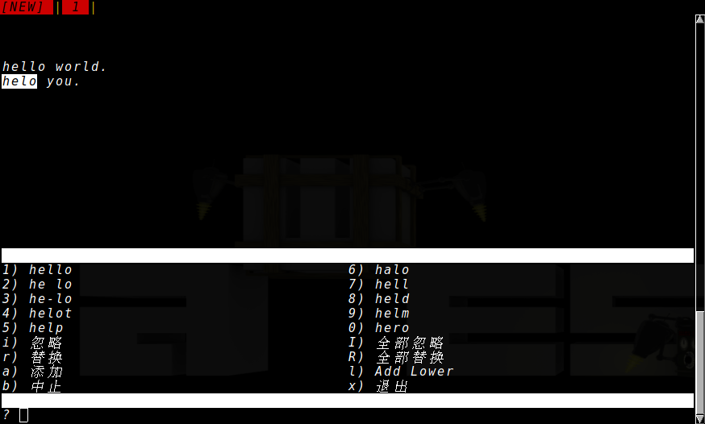
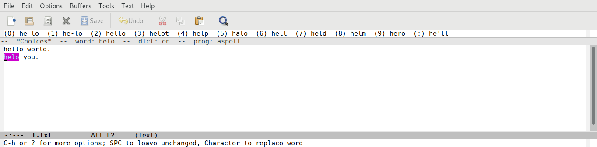
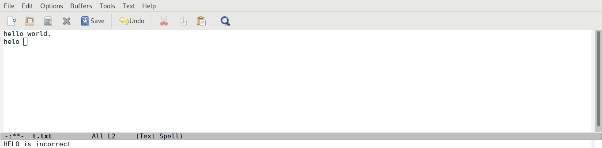
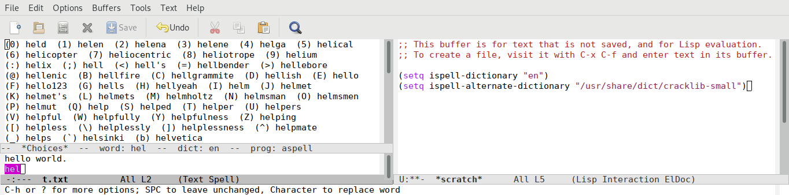
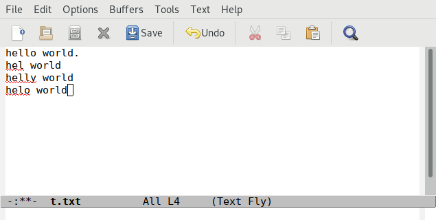
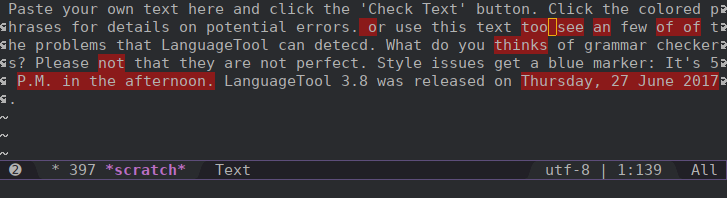
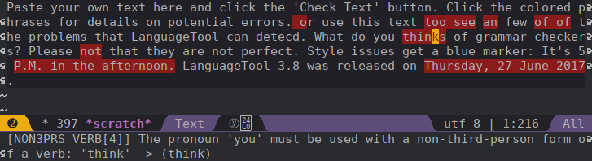
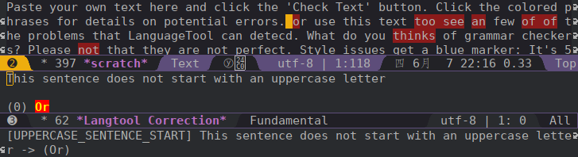

Emacs帮你进行英文写作
目录
ispell
ispell是Unix下的一个拼写(不仅仅是英文)检查工具，同时它也是Emacs用来调用ispell类工具进行拼写检查的插件名称。
之所以说是ispell类工具是因为Emacs的ispell插件不仅仅支持调用ispell来进行拼写检查，也支持调用aspell/hunspell来进行拼写检查。
而且事实上，aspell已经逐渐取代ispell成为主流。
安装aspell
既然Emacs是调用外部工具来做的拼写检查，那么第一步当然是要安装 aspell 了
sudo pacman -S aspell --noconfirm
resolving dependencies...
looking for conflicting packages...
Packages (1) aspell-0.60.6.1-5
Total Download Size: 0.57 MiB
Total Installed Size: 3.00 MiB
:: Proceed with installation? [Y/n]
:: Retrieving packages...
aspell-0.60.6.1-5-x... 0.0 B 0.00B/s 00:00 [----------------------] 0%
aspell-0.60.6.1-5-x... 361.4 KiB 531K/s 00:00 [#############---------] 61%
aspell-0.60.6.1-5-x... 587.9 KiB 1760K/s 00:00 [######################] 100%
(0/1) checking keys in keyring [----------------------] 0%
(1/1) checking keys in keyring [######################] 100%
(0/1) checking package integrity [----------------------] 0%
(1/1) checking package integrity [######################] 100%
(0/1) loading package files [----------------------] 0%
(1/1) loading package files [######################] 100%
(0/1) checking for file conflicts [----------------------] 0%
(1/1) checking for file conflicts [######################] 100%
(0/1) checking available disk space [----------------------] 0%
(1/1) checking available disk space [######################] 100%
:: Processing package changes...
(1/1) installing aspell [----------------------] 0%
(1/1) installing aspell [######################] 100%
Optional dependencies for aspell
perl: to import old dictionaries [installed]
:: Running post-transaction hooks...
(1/2) Arming ConditionNeedsUpdate...
(2/2) Updating the info directory file...
不过光安装 aspell 并没什么鸟用， aspell 是通过字典来检查拼写的，因此你还需要安装对应的字典.
pacman -Ss aspell
extra/aspell 0.60.6.1-5 [已安装]
A spell checker designed to eventually replace Ispell
extra/aspell-de 20161207-1
German dictionary for aspell
extra/aspell-en 2017.08.24-1
English dictionary for aspell
extra/aspell-es 1.11-6
Spanish dictionary for aspell
extra/aspell-fr 0.50.3-7
French dictionary for aspell
extra/aspell-nl 0.50.2-4
Dutch dictionary for aspell
community/aspell-ca 2.3.0-2
Catalan dictionary for aspell
community/aspell-cs 20040614-8
Czech dictionary for aspell
community/aspell-el 0.08-2
Greek dictionary for aspell
community/aspell-hu 0.99.4.2-5
Hungarian spellcheck dictionary for aspell
community/aspell-it 2.2_20050523-6
Italian dictionary for aspell
community/aspell-pl 20171220-1
Polish dictionary for aspell
community/aspell-pt 20161001-1
Portuguese and Brazilian Portuguese dictionary for aspell
community/aspell-ru 0.99f7-7
Russian dictionary for aspell
community/aspell-sv 0.51-1
Swedish dictionary for aspell
community/aspell-uk 1.8.0-1
Ukrainian dictionary for aspell
你可以看到aspell有很多个语言的字典，也就是支持多种语言的拼写检查，不过可惜的是不支持中文拼写检查(中文分词是个大问题)。
这里我们来安装英文的字典吧
sudo pacman -S aspell-en --noconfirm
resolving dependencies... looking for conflicting packages... Packages (1) aspell-en-2017.08.24-1 Total Download Size: 1.06 MiB Total Installed Size: 4.06 MiB :: Proceed with installation? [Y/n] :: Retrieving packages... aspell-en-2017.08.2... 0.0 B 0.00B/s 00:00 [----------------------] 0% aspell-en-2017.08.2... 133.6 KiB 216K/s 00:04 [##--------------------] 12% aspell-en-2017.08.2... 551.5 KiB 827K/s 00:00 [###########-----------] 50% aspell-en-2017.08.2... 1087.1 KiB 1874K/s 00:01 [######################] 100% (0/1) checking keys in keyring [----------------------] 0% (1/1) checking keys in keyring [######################] 100% (0/1) checking package integrity [----------------------] 0% (1/1) checking package integrity [######################] 100% (0/1) loading package files [----------------------] 0% (1/1) loading package files [######################] 100% (0/1) checking for file conflicts [----------------------] 0% (1/1) checking for file conflicts [######################] 100% (0/1) checking available disk space [----------------------] 0% (1/1) checking available disk space [######################] 100% :: Processing package changes... (1/1) installing aspell-en [----------------------] 0% (1/1) installing aspell-en [######################] 100% :: Running post-transaction hooks... (1/1) Arming ConditionNeedsUpdate...
现在你可以试着直接在shell中运行 aspell -c /tmp/t.txt 来进行拼写检查，然而你很有可能会得到这样一个错误提示
[lujun9972@T430S ~]$ aspell -c /tmp/t.txt 错误：No word lists can be found for the language "zh_CN".
这是因为aspell会默认会根据 LANG 变量的值来查找对应的字典，结果当然是找不到中文的字典咯。
你需要通过 -l en 来指定语言代码为英文。
aspell -c /tmp/t.txt -l en

配置ispell插件
Emacs的ispell插件会自动以此查找aspell,ispell和hunspell，并以第一个找到的程序为检查程序。 因此大多数情况下，你无需特意手工设置拼写程序的名称(ispell-program-name)。
不过默认情况下，Emacs的ispell插件也会是根据 LANG 变量的值来决定使用哪个字典来进行拼写检查的，因此很大可能，你有必要设置一下ispell插件用来检查的字典。
ispell插件提供了两个变量来设置用来做·拼写检查的字典:
- ispell-dictionary
- 用于设置全局的默认字典
- ispell-local-dictionary
- 用来设置当前buffer局部使用的字典
(setq ispell-dictionary "en")
aspell程序本身还支持很多的选项参数，若要传递这些参数给aspell进程，则可以通过定义 ispell-extra-args 来实现。
比如下面配置让aspell不检查小于等于3个字符的单词
(setq ispell-extra-args '("\W" "3"))
使用Ispell进行拼写检查
ispell
使用ispell进行拼写检查最简单的办法就是直接运行 M-x ispell, 在选中区域的情况下它会调用 ispell-region 来对该区域内的内容进行检查，否则会调用 M-x ispell-buffer 来对整个buffer中的内容进行拼写检查。
若拼写检查无错误，则 ispell 直接在echo area显示一条信息:
Spell-checking region using aspell with en dictionary...done
若发现了不认识的单词，则 ispell 会将光标定位到该单词，并高亮该单词，然后在上方显示修改建议

此时你可以做如下动作：
- 按下修改建议前的字母
- 使用对应的修改建议替换该单词
- C-h / ?
- 显示进一步的帮助
- 空格
- 忽略这个单词
- a / A
- 全文忽略该单词
- i
- 将该单词认为是正确的单词并加入个人词典中
- u
- 将单词的小写形式加入个人词典中
- r / R
- 手工输入新单词来替换该单词,r与R不同之处在于r只会对该单词做一次替换，而R可以对buffer中所有该单词出现的地方进行替换。
- x / X
- 退出这次单词检查,但ispell进程不被杀死
- q
- 退出单词检查，并且杀死ispell进程
如果文档中有多处相同的拼写错误，可以使用“R”进入替换模式，然后输入新单词，当查找到第二个匹配的单词时，按下“!”就会自动将后面所有的单词替换成正确的单词了。
递归编辑
ispell支持递归编辑，当你在进行拼写检查的过程中，可能会发现其他某个地方需要做个修改，但是又不想中断拼写检查的这个过程。
这个时候就可以按下 C=r 进入递归编辑状态。
在递归编辑状态下，你可以像往常一样使用Emacs来修改文档，当完成递归编辑后再使用 C-M-c 退出递归编辑并继续拼写检查。
ispell-word
如果你在写作时，脑袋卡壳了，对某个单词不确实是不是拼写正确的，那么可以直接执行 M-x ispell-word, 它仅仅会对光标所在的单词进行检查。
ispell-minior-mode
ispell-minior-mode 能够实时的对你输入的内容进行拼写检查。
当你输入一个单词后(按下空格或回车)，ispell会自动检查该单词，如果找不到该单词，则会给你以提示 
ispell-complete-word
当你不记得一个单词怎么拼写的时候，还可以使用 ispell 来帮你进行单词补全。
运行 M-x ispell-complete-word 就能看到一个可选列表，列出了各种可供选择的单词。
不过要使用该功能，你还必须设置 ispell-alternate-dictionary 的值。将其指向一个 包含各种单词的存文本格式文件 。

ispell-kill-ispell
启用ispell后，它会一直在后台运行。如果觉得不爽它消耗了系统资源，可以运行 M-x ispell-kill-ispell 把它干掉。
flyspell-mode
flyspell-mode跟ispell-minior-mode类似，也是提供了实时的单词拼写检查功能。
但它与ispell-minior-mode的不同点在于，dispell-minior-mode只会对刚刚输入的单词进行检查，而flyspell-mode会对buffer中所有单词进行检查，并在认为是错误的单词下面加上一个波浪线作为标识。

在flyspell-mode下修改错误单词的方法是，将鼠标移动到错误单词上，然后按下 鼠标中键 就能看到一系列的可选操作了。
flyspell-prog-mode
值得一提的是，flyspell还为程序员提供了一个 flyspell-prog-mode, 在该模式下，Emacs只会对注释和字符串中的内容进行拼写检查。
langtool
langtool是一个能够提供语法和写作风格检查的工具，它同时提供了命令行和GUI两种风格的界面，这使的它很容易与Emacs进行整合。
下载langtool离线版
langtool提供了Desktop版本来作为离线使用. 一般来说, 离线版langtool的功能要比在线版弱一些，但是对于一般的使用也足够了。
下载langtool zip压缩包
wget https://www.languagetool.org/download/LanguageTool-4.1.zip
解压langtool zip压缩包
unzip LanguageTool-4.1.zip
安装Emacs的langtool插件
langtool插件并不是Emacs自带的, 你可以从MELPA上安装，或者自己从github上下载
配置Emacs langtool插件
Emacs需要调用外部的langtool命令行工具来进行实际的检查工作，因此你首先需要指定langtool的命令行工具的地址:
(setq langtool-language-tool-jar "~/Downloads/LanguageTool-4.1/languagetool-commandline.jar")
langtool支持多种语言的语法检查，默认会自己推测所属的语系。 但这种推测可能不一定准确，尤其是英语系里面那么多的变体(Australian, Canadian, GB, New Zealand, South African, US)。 对此，你也可以明确指定一种语言：
(setq langtool-default-language "en-US")
关于langtool支持的语言列表，可以通过 C-u M-x langtool-check 来查看.
你还可以设置母语信息，langtool会根据你的母语对检测规则进行一些微调
(setq langtool-mother-tongue "zh-CN")
最后需要说明的是，langtool的规则十分繁复，其中甚至包括一些写作风格的规则检查。若将所有规则都应用起来，那么可能会出现很多误报的情况. 所幸langtool可以允许任意组合检查规则，根据需要我们可以禁止某些规则的检查。
(setq langtool-disabled-rules '("WHITESPACE_RULE" "EN_UNPAIRED_BRACKETS" "COMMA_PARENTHESIS_WHITESPACE" "EN_QUOTES"))
关于规则的说明，可以参见这里
比如，这里
- WHITESPACE_RULE的规则是不允许出现多个空格在一起，但实际上在编写org的时候常常需要靠多个空格进行缩进
- EN_UNPAIRED_BRACKETS的规则是不允许出现不匹配的括号，但是在org中是可以出现
1),2)这样的列表的 - COMMA_PARENTHESIS_WHITESPACE的规则不允许在逗号前或括号的前后出现空格，但是在org中，当用
)来表示列表时，是需要在)后接上空格的 - EN_QUOTES则不允许使用花引号,但是我一般图方便都是直接用键盘上的花引号来进行引用的。
使用langtool进行检查
使用langtool进行检查的步骤很简单。
运行
M-x langtool-check来进行检查若没有设置
langtool-default-language的langtool会自动推测检查的语言类别，否则就使用该变量的指定类别来进行检查。但有时候你可能要临时指定另一种语言的规则来进行检查，则可以运行
C-u M-x langtool-check, 这会弹出一个列表，让你从中选择要应用的语言规则。
如上图所示，langtool检查完后会用红色标记出检测出问题的地方，将光标移动到红色位置就会在echo area中显示是根据哪条规则检测出来的问题，并给出修改意见。

运行
langtool-correct-buffer修正检测出的问题langtool会依次跳转到各个检测出问题的地方，并给出修改意见

只要按下修改意见前的编号就能自动修复该问题了
- 由于不是所有检测出来的问题都是真正有错误的地方，
因此在修改完所有要修改的错误后，运行
langtool-check-done来清除所有的问题标记.
artbollocks-mode
artbollocks-mode是一款检查写作风格的第三方插件。它实际上是通过正则表达式匹配的方式，高亮出那些你认为不好的，需要注意的语言模式。
使用artbollocks-mode能检测到重复出现的单词(artbollocks-lexical-illusions-regex)，而这可能是你一不小心多写了。
它还能检测出常见的被动语态的写法(artbollocks-passive-voice-regex)，有助于你将之修改成主动语态。
它还会标注出那些含义含糊不清的词语(artbollocks-weasel-words-regex)，比如 many, various, remarkably
它甚至还标注出一些艺术评论方面的行话(artbollocks-jargon-regex) -- 这也是为什么它叫 art bollocks mode的原因。
不过我们一般写作过程中，也不太会用到艺术评论方面的行话，因此我们可以手工将之禁用
(setq artbollocks-jargon nil) ;关闭检测行话功能
或者使用自己领域的行话进行代替
(setq artbollocks-jargon t) ;; 设定自己的行话列表 (setq artbollocks-jargon-regex (concat "\\b" (regexp-opt '("u8s" "A/D" "A/B" "ADO") t) "\\b"))
值得一提的是，artbollocks 甚至提供了两个函数用于对你的内容进行可读性分析并给出评分：
M-x artbollocks-reading-ease基于 Flesch reading ease 进行评分，其评级标准为：Score School level Notes 100.00-90.00 5th grade Very easy to read. Easily understood by an average 11-year-old student. 90.0–80.0 6th grade Easy to read. Conversational English for consumers. 80.0–70.0 7th grade Fairly easy to read. 70.0–60.0 8th & 9th grade Plain English. Easily understood by 13- to 15-year-old students. 60.0–50.0 10th to 12th grade Fairly difficult to read. 50.0–30.0 College Difficult to read. 30.0–0.0 College graduate Very difficult to read. Best understood by university graduates. M-x artbollocks-grade-level基于 Flesch-Kincaid grade level 进行评分，其评级标准为Score level Notes 100 Very easy to read Average sentence length is 12 words or fewer. No words of more than two syllables. 65 Plain English Average sentence is 15 to 20 words long. Average word has two syllables. 30 A little hard to read Sentences will have mostly 25 words. Two syllables usually. 0 Very hard to read Average sentence is 37 words long. Average word has more than two syllables.
emacs-powerthesaurus
powerthesaurus 是一个根据你输入的单词查询同义词的词典，而emacs-powerthesaurus是Emacs对该网站的一个接口。
emacs-powerthesaurus是Emacs第三方插件，需要手工从MELPA安装:
(use-package powerthesaurus
:ensure t)
emacs-powerthesaurus 使用起来很简单，它并不需要进行特别的配置,只是提供了两个命令:
- powerthesaurus-lookup-word
- 查询选中区域的单词查询同义词并用选中的同义词替换选中区域的内容。 若没有选中区域的话，则手工输入要查询的单词，这是会将选中的同义词插入光标处。
- powerthesaurus-lookup-word-at-point
- 顾名思义，就是查询光标所在单词的同义词，并用选中的同义词来替换该单词。